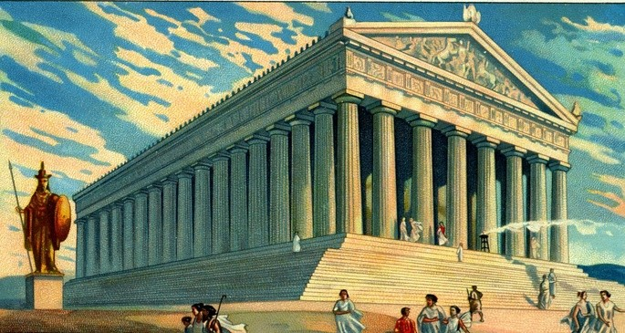

Foi uma civilização pertencente a um período da história grega que abrange desde o Período Homérico dos séculos XII a IX a.C. até o fim da antiguidade (c. 600 d.C.). Imediatamente após este período foi o início do início da Idade Média e da era bizantina.
Aproximadamente três séculos após o Colapso da Idade do Bronze da Grécia micênica, as pólis urbanas gregas começaram a se formar no século VIII a.C., dando início ao Período Arcaico e à colonização da Bacia do Mediterrâneo. Isto foi seguido pelo período da Grécia Clássica, uma era que começou com as Guerras Greco-Persas, que durou do século V ao século IV a.C.. Devido às conquistas de Alexandre, o Grande da Macedônia, o Período Helenístico floresceu da Ásia Central até o extremo oeste do Mar Mediterrâneo. Esta era chegou ao fim com as conquistas e anexações do mundo mediterrâneo oriental pela República Romana, que estabeleceu a província romana da Macedônia na Grécia romana e mais tarde a província de Acaia, durante o Império Romano.
A cultura grega clássica, especialmente a filosofia, teve uma influência poderosa na Roma Antiga, que carregou uma versão dela para muitas partes da Bacia do Mediterrâneo e da Europa. Por essa razão, a Grécia Clássica é geralmente considerada a cultura seminal que forneceu a base da cultura ocidental moderna e é considerada o berço da civilização ocidental.
Os gregos clássicos davam grande importância ao conhecimento. Ciência e religião não eram separadas e aproximar-se da verdade significava aproximar-se dos deuses. Nesse contexto, eles entendiam a importância da matemática como um instrumento para obter um conhecimento mais confiável ("divino").A cultura grega, em poucos séculos e com uma população limitada, conseguiu explorar e progredir em muitos campos da ciência, matemática, filosofia e conhecimento em geral, o que deixou um legado duradouro
Roma AntigaA sociedade romana antiga contribuiu para o governo, o direito, a política, a engenharia, as artes, a literatura, a arquitetura, a tecnologia, a guerra, as religiões, as línguas e as sociedade modernas. Como uma civilização altamente desenvolvida, Roma profissionalizou e expandiu suas forças armadas e criou um sistema de governo chamado res publica, a inspiração para repúblicas modernas,[7][8][9] como os Estados Unidos e a França. Conseguiu feitos tecnológicos e arquitetônicos impressionantes, tais como a construção de um amplo sistema de aquedutos e estradas, bem como a construção de grandes monumentos, palácios e instalações públicas. Até o final da República (27 a.C.), Roma tinha conquistado as terras em torno do Mediterrâneo e além: seu domínio se estendia do oceano Atlântico à Arábia e da boca do Reno ao norte da África. O Império Romano surgiu com o início da ditadura de Augusto que encerrou o período da República. Os 721 anos de Guerras Romano-Persas começaram em 92 a.C. com a sua primeira guerra contra o Império Parta. Este se tornaria o mais longo conflito da história humana e teve grandes efeitos e consequências duradouros para ambos os impérios. Sob Trajano, o Império atingiu o seu pico territorial. Os costumes e as tradições republicanas começaram a diminuir durante o período imperial, com guerras civis tornando-se um prelúdio comum para o surgimento de um novo imperador.
FeudalismoFeudalismo é o nome dado à forma de organização econômica e social vivenciada na Europa Centro-Ocidental durante o período histórico conhecido como Idade Média, entre os séculos V e XV. O nome é derivado dos feudos (ou vilas), as unidades de habitação e produção que eram características do período. Essas grandes propriedades agrárias demonstraram que houve um processo de ruralização da sociedade que habitava o continente europeu e as ilhas Britânicas, bem como uma passagem da organização do trabalho pautada no escravismo para a servidão.
Origem do IslamismoO islamismo é uma religião surgida na Península Arábica, no começo do século VII, por meio de Muhammad (conhecido em português como Maomé). Essa crença religiosa atualmente é a segunda maior do mundo, possuindo cerca de 1,8 bilhão de fiéis, a maioria deles localizada no continente asiático e africano.
Islã é o aportuguesamento da palavra em árabe islam. Essa palavra, nesse idioma, significa submissão e é derivada de salam, que significa paz. O sentido de paz mencionado não se refere ao conceito de guerra, mas sim a uma condição de paz entre corpo e espírito.
Invasão Da AméricaO termo “descobrimento da América” é utilizado para a chegada dos espanhóis ao continente americano, em 12 de outubro de 1492. Isso aconteceu por meio da expedição liderada pelo navegante genovês Cristóvão Colombo. Essa expedição não foi idealizada com a proposta de chegar-se a terras desconhecidas, mas sim ao continente asiático.
A chegada dos espanhóis à América deu início ao processo de colonização do continente americano e também à disputa por terras com os portugueses. Apesar das evidências, Colombo nunca acreditou que tinha chegado a um novo continente. Apesar do feito, os espanhóis não foram os primeiros europeus a chegaram à América, pois os vikings tinham feito isso no século X.